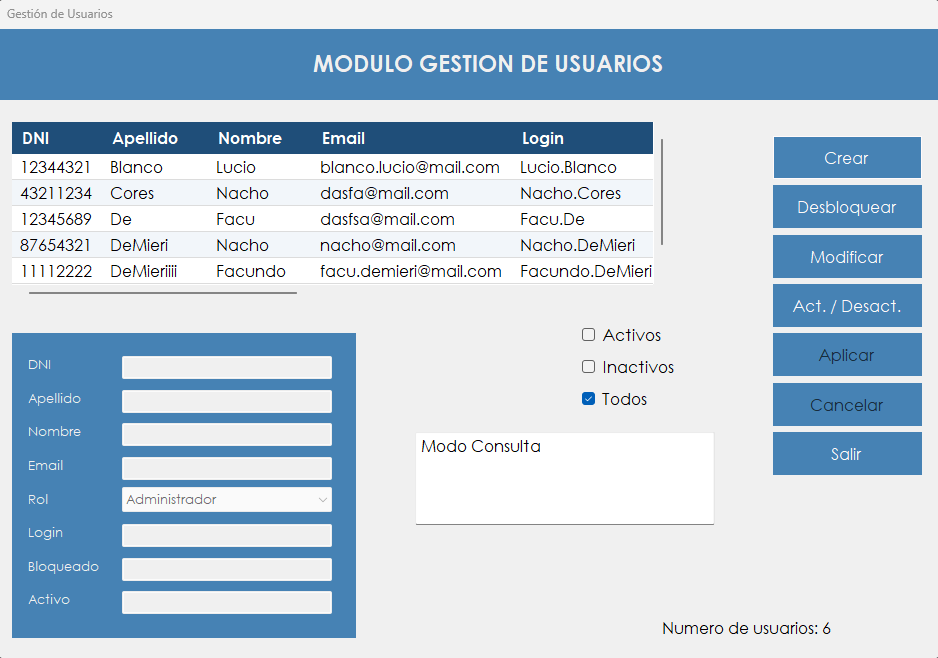

Permite al administrador dar de alta usuarios, modificar sus datos, activarlos o desactivarlos y desbloquear cuentas.
Cada persona que trabaja con AeroManager necesita una cuenta propia. Desde esta pantalla, el administrador la crea y le asigna un rol, y ese rol determina qué módulos va a ver en el menú.
Los usuarios no se eliminan: cuando alguien deja de operar el sistema, su cuenta se desactiva. Así se conserva el historial de lo que hizo, y la cuenta se puede volver a activar si hace falta.
También es el lugar donde se resuelve una cuenta bloqueada. Un usuario que agotó sus intentos de ingreso no puede desbloquearse solo: tiene que hacerlo un administrador.
Desde el menú principal, en Administrador › Gestion de Usuarios. La opción aparece si el rol del usuario incluye la patente correspondiente.

| Control | Para qué se usa |
|---|---|
| Grilla de usuarios | Muestra DNI, Apellido, Nombre, Email, Login, Id Rol, Bloqueado, Activo, Intentos Fallidos, Último Idioma y Fecha Último Intento. Un clic en una fila carga ese usuario. |
| Activos, Inactivos, Todos | Filtran la grilla. Se usa una opción por vez. |
| Cuadro de modo | Indica el modo de la pantalla: Modo Consulta, Modo Añadir o Modo Modificar. |
| Numero de usuarios | Cantidad de usuarios que muestra la grilla. |
| DNI | Documento del usuario. Se carga al crearlo y después no se puede cambiar. |
| Apellido y Nombre | Se cargan al crear el usuario y después no se pueden cambiar. |
| Correo del usuario. Es obligatorio y se puede modificar. | |
| Rol | Rol del usuario. Se puede modificar. |
| Login | Nombre con el que ingresa. Lo genera el sistema con el nombre y el apellido. |
| Bloqueado y Activo | Muestran el estado del usuario elegido, con los valores True o False. |
| Crear | Prepara la pantalla para cargar un usuario nuevo. |
| Desbloquear | Desbloquea al usuario elegido y restablece su contraseña. |
| Modificar | Habilita la edición de Email y Rol del usuario elegido. |
| Act. / Desact. | Cambia al usuario elegido de activo a inactivo, o al revés. |
| Aplicar | Guarda el alta o la modificación en curso. |
| Cancelar | Descarta lo cargado y vuelve al modo consulta. |
| Salir | Cierra la pantalla. |
| Situación | Qué significa y qué hacer |
|---|---|
| "Debe seleccionar un usuario." | Hay que hacer clic en una fila de la grilla antes de usar el botón. |
| "Debe completar todos los campos obligatorios." | Al crear, falta el DNI, el apellido, el nombre o el email. Al modificar, falta el email. |
| "El DNI debe tener exactamente 8 dígitos." | Hay que completar los ocho dígitos del documento. |
| "El DNI solo puede contener números." | Hay que quitar letras, puntos o espacios. |
| "Debe seleccionar un Rol." | Hay que elegir un rol de la lista. |
| "Usuario creado correctamente." | La cuenta ya se puede usar con el login y la contraseña inicial. |
| "Error al crear el usuario:" seguido del motivo | El usuario no se creó. Después de los dos puntos se indica la causa, por ejemplo que ya existe un usuario con ese DNI o con ese nombre y apellido. |
| "Usuario modificado correctamente." | Los cambios quedaron guardados. |
| "Error al modificar el usuario:" seguido del motivo | Los cambios no se guardaron. Después de los dos puntos se indica la causa técnica. |
| "Usuario desactivado correctamente." | La persona ya no puede ingresar al sistema. |
| "Usuario activado correctamente." | La persona puede volver a ingresar. |
| "El usuario no está bloqueado." | No hay nada que desbloquear, y la contraseña no cambia. |
| "Usuario desbloqueado y contraseña restablecida correctamente." | La cuenta quedó habilitada, con la contraseña inicial y los intentos fallidos en cero. |
| "La operación se registró correctamente, pero no pudo asentarse en la Bitácora:" seguido del motivo | El cambio se guardó, pero el evento no quedó en la bitácora. Después de los dos puntos se muestra el motivo técnico. |